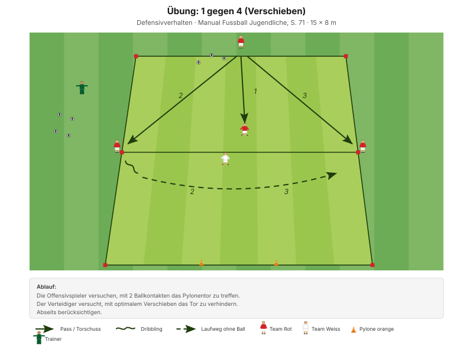
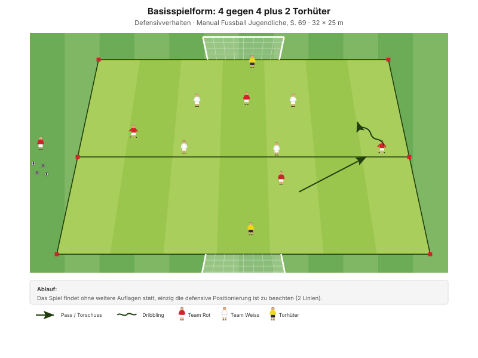

Kompakt bleiben heisst: Der Abstand zwischen den Spielern verändert sich nicht, wenn der Ball sich bewegt. Das ganze Team rutscht mit – wie ein Netz, nicht wie elf Einzelne.
"Ballorientiert, kompakt und situationsangepasst verteidigen" Erscheinungsform D1, Manual Fussball Jugendliche, S. 69
Die zwei Linien entsprechen im Spiel dem 1-3-2-1: die Dreierkette als hintere, die beiden Mittelfeldspieler als vordere Linie. Das explizit benennen, dann ist der Bezug zum Spieltag da.
Das Manual fragt in den Entwicklungsfragen ausdrücklich "Wer kommuniziert wann, was, wie?", beantwortet es aber nicht. Für D-Junioren reichen drei feste Kommandos:
Diese drei Rufe stehen so nicht in den J+S-Unterlagen – sie sind eine eigene Ergänzung. Aus allgemeinem Fussballwissen: mehr als drei Kommandos merkt sich ein D-Junior im Spiel nicht.
| Zeit | Min | Teil | Inhalt |
|---|---|---|---|
| 0–4 | 4 | Besammlung | Thema ansagen, Gruppen einteilen |
| 4–16 | 12 | E1 | 4 gegen 2 Ballhalten · Big 4 zwischen den Wiederholungen |
| 16–22 | 6 | E2 | 4 gegen 2 mit Wettkampf |
| 22–30 | 8 | E3 | Finde die Lücke (Explosivität) |
| 30–45 | 15 | H1 | 1 gegen 4 · Verschieben |
| 45–48 | 3 | Pause | Trinken, Umbau |
| 48–70 | 22 | H2 | 5 gegen 5 plus 2 Torhüter · zwei Linien |
| 70–82 | 12 | Abschluss | Freies Spiel 5 gegen 5 plus 2 Torhüter |
| 82–90 | 8 | Ausklang | Cool-down, zwei Entwicklungsfragen, Verabschiedung |
| Total | 90 |
Einstieg 26 · Hauptteil 37 · Abschluss 20 Min. – nach dem Trainingsschema des Manuals (S. 43).
Nur einmal umbauen: Die beiden Rondos des Einstiegs liegen im späteren Spielfeld. Für H1 braucht es nur ein schmales Feld mit einem Pylonentor.
Eigene Skizze · Platzaufteilung
Nur einmal aufbauen – das Einstiegsfeld liegt im späteren Spielfeld.
12 Minuten · 2 Gruppen à 6 · je 14 × 12 m · alle 12 Spieler
Eigene Skizze · 4 gegen 2 Ballhalten
3 Wiederholungen à 1'30''–2' – zwischen den Wiederholungen je zwei Präventionsübungen.
"Eine Spielerin macht Druck auf den Ball, die andere sichert die Mitte ab" SFV-Lernbaustein "Einstieg TA: Mitspieler absichern und Zentrum schliessen", Phase 1
Zwei Verteidiger, zwei Rollen – einfacher wird die Frage "wer geht, wer sichert" nie. Ab der zweiten Wiederholung gilt: ohne Ruf zählt die Balleroberung nicht.
Je zwei Übungen zwischen den Wiederholungen, 25 Sekunden pro Übung:
| Bereich | Übung | Worauf achten |
|---|---|---|
| Fussgelenk | Alphabet balancieren | Das Knie knickt weder nach innen noch nach aussen und beugt sich nicht über die Fussspitze hinaus. |
| Knie | Copenhagen | Schulter, Hüfte, Knie und Fussgelenk in einer Linie, das untere Bein bleibt gestreckt. |
| Hüfte | Dead Bug | Kinn zur Brust ziehen, damit der Rücken flach und in Kontakt mit dem Boden bleibt. |
| Hamstrings | Standwaage mit Partner | Keine Rotation bei den Schlägen auf den Ball zulassen – Position stabil halten. |
"Arbeit mit Zeitvorgaben – nicht mit Anzahl Wiederholungen." Prinzip Körperstabilität, Manual Fussball Jugendliche, S. 75
Zwei Punkte pro Übung nennen, nicht mehr. Qualität vor Tempo.
6 Minuten · gleiche Felder · 3 Wiederholungen à 1'30''–2'
Kein Umbau – die Form von E1 bekommt eine Wertung. Wer gewinnt, innen oder aussen?
| Team | Punkte für … |
|---|---|
| Innen (die 2 Verteidiger) | jede Balleroberung · jeder Ball im Aus |
| Aussen (die 4) | 6 Pässe am Stück · jeder Pass durch die Schnittstelle zwischen den Verteidigern |
"Ein Spieler macht Druck auf den Ball, der andere sichert die Mitte ab" SFV-Lernbaustein "Einstieg TA: Mitspieler absichern und Zentrum schliessen", Phase 2
Warum die Schnittstelle zählt: Genau dort bricht die Absicherung zusammen. Gehen beide drauf, ist die Schnittstelle offen – und die vier aussen bestrafen es sofort. Der Fehler wird zählbar.
8 Minuten · 2 Bahnen · Paare bilden
| Parameter | Vorgabe |
|---|---|
| Distanz | 15–30 m |
| Wiederholungen | 3 |
| Pause zwischen Wiederholungen | 1/15 (Belastung × 15) |
| Serien | 3 |
| Pause zwischen Serien | 1'30''–2' |
"Erholungszeit: 10- bis 20-fache Dauer der Belastungszeit, abhängig von der Laufdistanz. Vollständig erholen zwischen den Wiederholungen." Prinzipien Explosivität, Manual Fussball Jugendliche, S. 72
15 Minuten · 15 × 8 m · 2 Felder parallel
Manual-Vorlage · Diagramm 43 "1 gegen 4" (S. 71)

Zwei Felder parallel – je 5 Spieler, die übrigen zwei rotieren nach jedem Durchgang hinein.
"Die Offensivspieler/innen versuchen, mit 2 Ballkontakten das Pylonentor zu treffen. Der/die Verteidiger/in versucht, mit optimalem Verschieben das Tor zu verhindern." Übung, Manual Fussball Jugendliche, S. 71 (Diagramm 43) · 15 × 8 Meter
Einer gegen vier ist nicht zu gewinnen – und das ist der Punkt. Der Verteidiger kann nur eines tun: sich im richtigen Moment am richtigen Ort befinden. Verschieben wird hier von der Nebensächlichkeit zur einzigen verfügbaren Handlung.
22 Minuten · 36 × 28 m · alle 12 Spieler
Manual-Vorlage · Diagramm 37 "4 gegen 4 plus 2 Torhüter" (S. 69)

Heute 5 gegen 5 statt 4 gegen 4 – Feld entsprechend grösser.
"Das Spiel findet ohne weitere Auflagen statt, einzig die defensive Positionierung ist zu beachten (2 Linien)." Basisspielform, Manual Fussball Jugendliche, S. 69 (Diagramm 37) · 32 × 25 Meter
"Die Basisspielform eignet sich besonders gut, um die Prinzipien sichtbar zu machen und zu beobachten." Manual Fussball Jugendliche, S. 57
Ein freies Spiel mit einer einzigen Auflage: die zwei Linien halten. Nichts lenkt ab, und genau deshalb wird sichtbar, wann und warum die Ordnung zerfällt.
12 Minuten · gleiches Feld, kein Umbau
Keine Auflagen, keine Bonusregeln. Hier wird sichtbar, was von den 70 Minuten davor hängen geblieben ist.
8 Minuten · Cool-down im Gehen, dann Kreis in der Mitte
Zuerst 3–4 Minuten lockeres Auslaufen und Mobilität, dann der Kreis. Zwei Fragen – die Antworten kommen von den Spielern, nicht vom Trainer:
"Habt ihr die gegnerischen Angriffe erfolgreich unterbunden? Wenn nein, welches Prinzip habt ihr vernachlässigt? Was müsst ihr verbessern (individuell/als Gruppe)?"
"Hast du kommuniziert? Wie kommunizierst du noch besser? Wer kommuniziert wann, was, wie?" Entwicklungsfragen zur Spielphase "Wir haben den Ball nicht", Manual Fussball Jugendliche, S. 69
Material aufräumen – laut Teamregel Respekt Teamarbeit, nicht Strafe.
| Teil | Vorlage | Seite |
|---|---|---|
| E1 – E3 | SFV-Lernbaustein "Einstieg TA: Mitspieler absichern und Zentrum schliessen", Phasen 1–3 | – |
| H1 | Übung "1 gegen 4" (Diagramm 43) | 71 |
| H2 | Basisspielform "4 gegen 4 plus 2 Torhüter", zwei Linien (Diagramm 37) | 69 |
| Ziele, Coaching, Entwicklungsfragen | Kapitelkopf "Wir haben den Ball nicht" | 69 |
| Die drei Rufe | Eigene Ergänzung zur Manual-Frage "Wer kommuniziert wann, was, wie?" | 69 |
| Explosivität, Körperstabilität | Athletik und Gesundheit | 72, 75 |
| Trainingsaufbau | Trainingsschema (Abb. 19) | 43–45 |
Alle Seitenangaben beziehen sich auf das J+S Manual Fussball Jugendliche (BASPO/SFV, 2022). Spielerzahlen und Feldmasse sind auf einen Kader von 12 Spielern angepasst. Dieser Trainingsplan wurde mit Unterstützung von KI (Claude, Anthropic) erstellt.